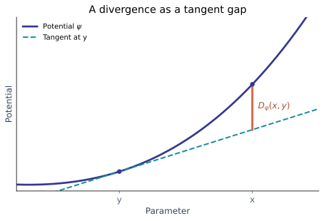

Non-Euclidean Optimization Methods for Machine Learning
Research context and three-year plan · CVN, CentraleSupélec
The problem: how should we update the weights?
The optimizer turns gradients into parameter updates.

Question: Can an update use the structure of the model to reach a good solution faster?
Gradient descent and SGD
\[\theta_{t+1} = \theta_t - \eta\, g_t\]
Gradient descent
Uses the full dataset to compute the gradient. Simple, but expensive for large datasets.
Stochastic gradient descent
Uses a mini-batch estimate. Cheaper updates, with noise that changes from step to step.
The usual update uses Euclidean geometry: it treats the gradient as the update direction.
Adam and AdamW
Adam
Combines momentum with coordinate-wise scaling based on past squared gradients.
\[\theta_{t+1}\approx\theta_t-\eta\frac{m_t}{\sqrt{v_t}+\epsilon}\]
AdamW
Uses the Adam update with decoupled weight decay.
A common baseline for training modern neural networks.
Adaptive scaling helps, but it does not automatically capture the role of each layer.
Changing the geometry
Linear oracle
A linear minimization oracle (LMO) finds the best direction for a linear objective over a chosen feasible set.
Frank–Wolfe
Uses an LMO to optimize over a constrained set, avoiding an explicit projection step.
Mirror descent
Uses a geometry defined by a potential and its Bregman divergence to form updates.
Modular duality: choose layer-aware norms and combine them into an architecture-aware update.
Bregman divergence and mirror descent
For a convex potential \(\psi\), the divergence is the gap above its tangent at \(y\):
\[D_{\psi}(x,y)=\psi(x)-\psi(y)-\langle\nabla\psi(y),x-y\rangle\]
Quadratic potential: \(\psi(x)=\tfrac12\|x\|_2^2\) gives \(D_{\psi}(x,y)=\tfrac12\|x-y\|_2^2\).
Mirror descent balances a linearized loss against this divergence from the current point.

Different potentials give different geometries; a Bregman divergence need not be symmetric.
Muon: a matrix-aware example
- Accumulate a momentum matrix from the gradient.
- Approximately orthogonalize that matrix.
- Apply a scaled update to matrix weights.
Other parameters can use a different optimizer, such as AdamW.
Why it matters
The update acts on a matrix as a whole, reflecting its geometry rather than independently scaling every coordinate.
Muon motivates the question: what geometry fits each architectural component?
Research question
Can we design efficient updates from norms adapted to a model’s components?
Start from existing results
- Linear layers and embeddings have distinct roles.
- Existing work derives candidate layerwise norms and duality maps.
Investigate new settings
- Attention: heads, variants, and residual connections.
- State-space architectures such as Mamba.
- Other widely used modules and compositions.
The appropriate norm is a hypothesis to derive and test, not a universal choice.
Goals and evaluation
- Theory — derive candidate norms and practical updates; study convergence under explicit assumptions.
- Experiments — compare against SGD, AdamW, and Muon on controlled training tasks.
- Speed — aim for a competitive optimizer on the modded NanoGPT speedrun, under its applicable rules.
- Usability — explore PyTorch-compatible modules and optimizer tooling that select appropriate geometry.
Methods
Mathematical analysis
- Study how layer operations shape useful norms.
- Derive candidate updates and examine their computational cost.
- Prove properties under explicit assumptions where possible.
Experimental evaluation
- Implement candidates in Python and PyTorch.
- Compare to established baselines under matched budgets.
- Measure loss, time to target, memory, and sensitivity to tuning.
Use the results to refine both the theory and the implementation.
A three-year plan
Year 1
Build foundations
- Master geometry and optimizer literature.
- Reproduce baselines and set up benchmarks.
- Identify promising layer-level questions.
Year 2
Develop and test
- Derive candidate norms and updates.
- Analyze assumptions and convergence.
- Run controlled architecture comparisons.
Year 3
Scale and share
- Test promising methods at larger scale.
- Pursue the NanoGPT speedrun goal.
- Package reusable PyTorch tooling and publish results.
Why this topic? Where next?
Motivation
- Connect mathematics with real deep learning systems.
- Understand how architecture changes optimization.
- Build methods that others can use.
Professional ambitions
- Join an AI research lab or startup—or build a startup.
- Explore AI and LLMs as research tools to work faster and investigate deeper questions.
My goal: combine theory, experiments, and useful tools.
References
- Bernstein & Newhouse, Modular Duality in Deep Learning, 2024. arXiv:2410.21265
- Bernstein & Newhouse, Old Optimizer, New Norm: An Anthology, 2024. arXiv:2409.20325
- Kingma & Ba, Adam: A Method for Stochastic Optimization, 2015. arXiv:1412.6980
- Loshchilov & Hutter, Decoupled Weight Decay Regularization, 2019. arXiv:1711.05101
- Jaggi, Revisiting Frank-Wolfe: Projection-Free Sparse Convex Optimization, 2013. PMLR
- Keller Jordan et al., Muon: An optimizer for hidden layers in neural networks, 2024. Project
Thank you
Questions and discussion
Mathéo Le Dévéhat · CVN